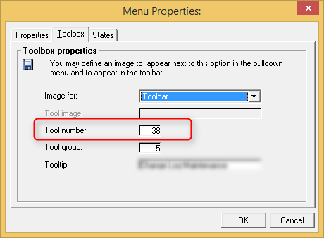

How to handle the “Usage of magic’s icon in toolbar, please replace with your own” message from the migration log
This message appears in the migration log whenever a menu entry icon was specified using the “Tool number” and not the “Tool image” property:

The icon resided in a Magic dll and has to be replaced in the migrated code.
All the icons of the migrated code are located in the resources.resx file, found in the properties of the startup project:

Opening this file will show you all the icons – some of the most commonly used ones (such as copy, cut, delete, VCR, etc.) are included in the file.
In order to update a toolbar menu item:
- Open the ApplicationMdi view in the designer (located in the Views folder of the startup project)
- Click on the icon in the tool bar (note: it will not be displayed, you need to know its location and click on an “empty” icon)
- Open its properties
- Park on the Image property and press the ellipsis (the “…” icon)
- In the “Select Resource” window you can choose an existing icon or press the Import button to select an external icon (16*16 pixels) that will be used
(it will be added automatically to the resources.resx file)

Help us improve, Edit this page on GitHub